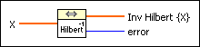
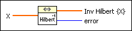
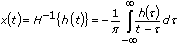
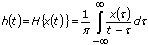

Inverse Fast Hilbert Transform VI
Owning Palette: Transforms VIs
Requires: Full Development System
Computes the inverse fast Hilbert transform of the input sequence X using Fourier identities.

 Add to the block diagram Add to the block diagram |
 Find on the palette Find on the palette |
Owning Palette: Transforms VIs
Requires: Full Development System
Computes the inverse fast Hilbert transform of the input sequence X using Fourier identities.

| Add to the block diagram |
Find on the palette |
 |
X is the first input sequence. |
 |
Inv Hilbert {X} is the inverse Hilbert Transform of the input signal X. |
 |
error returns any error or warning from the VI. You can wire error to the Error Cluster From Error Code VI to convert the error code or warning into an error cluster. |
The inverse Hilbert transform of a function h(t) is defined as

Using the definition of the Hilbert transform

you can obtain the inverse Hilbert transform by negating the forward Hilbert transform
x(t) = H–1{h(t)} = –H{h(t)}
Therefore, the Inverse Fast Hilbert Transform VI performs the discrete implementation of the inverse Hilbert transform with the aid of the Hilbert transform by taking the following steps.
The Hilbert transform works best with AC coupled, band-limited signals.